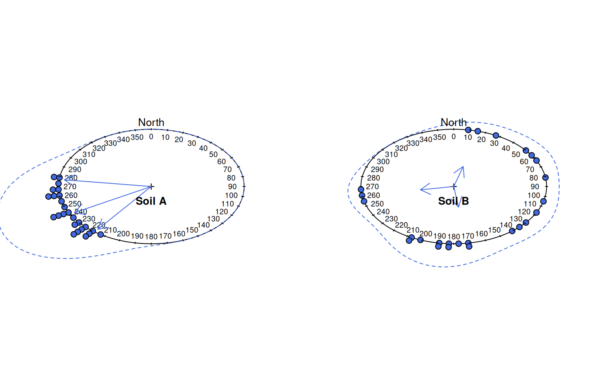

Plot a graphical summary of multiple aspect measurements on a circular diagram.
a vector of aspect angles in degrees, measured clock-wise from North
a vector of desired quantiles
number of bins to use for circular histogram
bandwidth used for circular density estimation
logical, should the individual points be stacked into p.bins number of bins and plotted
a sequence of integers (degrees) describing the circular axis
an informative title
density line color
density line width
density line line style
arrow color
arrow line width
arrow line style
arrow head length
further arguments passed to circular::plot.circular
invisibly returns circular stats
Spread and central tendency are depicted with a combination of circular histogram and kernel density estimate. The circular mean, and relative confidence in that mean are depicted with an arrow: longer arrow lengths correspond to greater confidence in the mean.
Manual adjustment of p.bw may be required in order to get an optimal circular density plot. This function requires the package circular, version 0.4-7 or later.
# simulate some data
p.narrow <- runif(n=25, min=215, max=280)
p.wide <- runif(n=25, min=0, max=270)
# set figure margins to 0, 2-column plot
op <- par(no.readonly = TRUE)
par(mar = c(0,0,0,0), mfcol = c(1,2))
# plot, save circular stats
x <- aspect.plot(p.narrow, p.bw=10, plot.title='Soil A', pch=21, col='black', bg='RoyalBlue')
#>
#> Rayleigh Test of Uniformity
#> General Unimodal Alternative
#>
#> Test Statistic: 0.9282
#> P-value: 0
#>
y <- aspect.plot(p.wide, p.bw=10, plot.title='Soil B', pch=21, col='black', bg='RoyalBlue')

#>
#> Rayleigh Test of Uniformity
#> General Unimodal Alternative
#>
#> Test Statistic: 0.3879
#> P-value: 0.0216
#>
# reset output device options
par(op)
x
#> Circular Data:
#> Type = angles
#> Units = degrees
#> Template = geographics
#> Modulo = 2pi
#> Zero = 1.570796
#> Rotation = clock
#> 5% 50% 95%
#> 277.8922 251.6775 218.9175